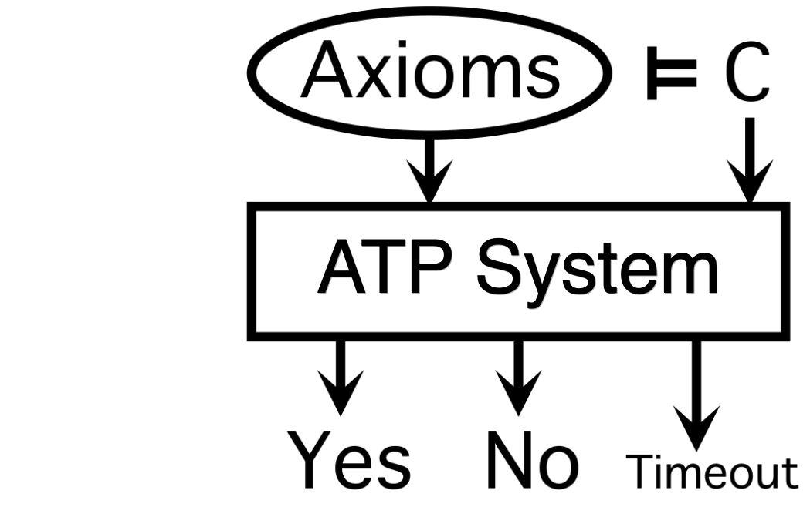

ATP and the TPTP World

Automated Theorem Proving (ATP)
- "the derivation of conclusions that follow inevitably from facts"
"establishing the consistency of facts"
- Applications: ... SWV, HWV, PLA, NLP, PRO, AGT, SCT, REL, GEG, ...
- Complex software, complex installation → SystemOnTPTP
- Containerisation → Developers
The TPTP World
- Well established ATP infrastructure
- TPTP, TSTP, SZS, SystemOnTPTP, CASC, ...
- Diverse user community in academia and industry
- tptp.org